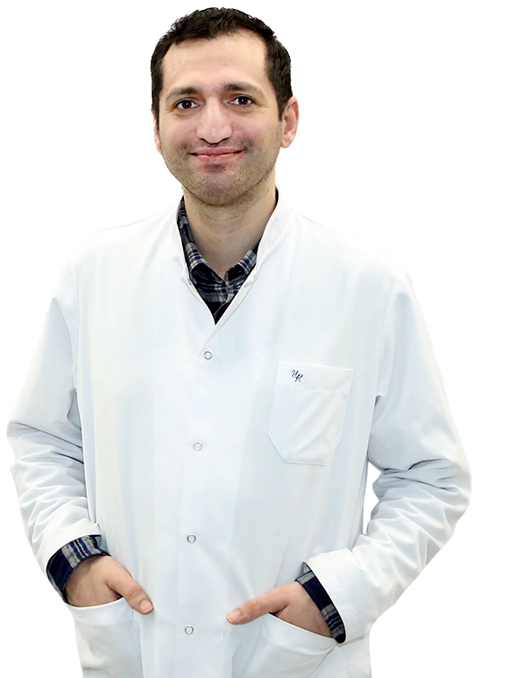

01
Asian J Neurosurg 2023

Beyin, onurğa və sinir sistemi xəstəliklərinin vaxtında diaqnozu, müasir cərrahiyyə üsulları və peşəkar yanaşma ilə sağlamlığınızı bərpa edirik. Bakıda 20 illik təcrübə ilə xidmətinizdəyik.

Uzman Neyrocərrah · Nevropatoloq · Bakı, Azərbaycan
Neyrocərrah və nevropatoloq kimi Rusiya və Türkiyədə ixtisaslaşmış, 20 ilə yaxın beynəlxalq təcrübəyə malik mütəxəssisdir. Beyin şişləri, onurğa yırtıqları, spinal şişlər və digər neyrocərrahi əməliyyatları uğurla həyata keçirir.
Dr. Azad Məlikov tərəfindən icra olunan beyin, onurğa və sinir sistemi əməliyyatları — anterior servikal diskektomiya, posterior diskektomiya, onurğa fiksasiyası, spinal şiş, kraniotomiya, hipofiz şişi əməliyyatları Bakıda.
Boynun ön tərəfindən girilərək zədələnmiş diskin çıxarıldığı cərrahi əməliyyatdır. Bu prosedur sinir sıxılmasını aradan qaldıraraq ağrını azaldır və xəstənin gündəlik fəaliyyətini asanlaşdırır.
Boynun arxa hissəsindən girilərək sıxılmış sinirlərin azad edildiyi cərrahi müdaxilədir. Sinir köklərinin dekompressiyası xəstənin ağrı və hərəkət məhdudiyyətini aradan qaldırır.
Döş və bel nahiyəsindəki zədələnmiş disklərin cərrahi yolla çıxarılması əməliyyatıdır. Bu müdaxilə onurğa sinirlərinə olan təzyiqi aradan qaldırır.
Qeyri-stabil onurğa seqmentlərinin metal implantlar vasitəsilə sabitləndirilməsi əməliyyatıdır. Sınıq, sürüşmə və ya deformasiya hallarında tətbiq edilir.
Onurğa kanalı və ətrafındakı şişlərin cərrahi yolla çıxarılması əməliyyatıdır. Şişin yerləşməsinə görə müxtəlif yanaşmalar tətbiq edilir.
Kəllə sümüyünün açılması yolu ilə beyin şişlərinin çıxarılması əməliyyatıdır. Müasir neyronaviqasiya texnologiyaları ilə həyata keçirilir.
Burun yolu vasitəsilə hipofiz vəzisindəki şişlərin çıxarılması əməliyyatıdır. Minimal invaziv yanaşma ilə sürətli bərpa təmin edilir.
Real pasientlərin neyrocərrahi əməliyyat əvvəl-sonra müqayisə şəkilləri
Azərbaycan Tibb Universiteti: Pediatriya fakültəsi
Tuşin Uşaq Xəstəxanası, Moskva: Ordinator nevroloq
Speranski adına 9 sayılı Uşaq Xəstəxanası, Moskva: Ordinator nevroloq
Mingəçevir Şəhər Xəstəxanası: Həkim-nevropatoloq
Regional Müalicə Diaqnostika Mərkəzi: Həkim-nevropatoloq
Nümunə Xəstəxanası, Ankara: Asistan neyrocərrah
Ankara Şəhər Xəstəxanası, Ankara: Asistan neyrocərrah
Yeni Klinika: Uzman Neyrocərrah
1 saylı Kliniki Tibbi Mərkəz (Semaşko): Uzman Neyrocərrah

Dr. Azad Məlikovun neyrocərrahiyyə sahəsində beynəlxalq elmi jurnallarda dərc olunan tədqiqat işləri
Neyrocərrahi əməliyyatlardan sonra pasientlərimizin real təcrübələri və məmnuniyyət rəyləri
"Onurğa yırtığı səbəbilə hərəkətim çox məhdudlaşmışdı. Azad həkim əməliyyatı uğurla həyata keçirdi və bu gün normal həyatımı yaşayıram. Əsl mütəxəssisdir!"
Onurğa əməliyyatı"Uzun illər boyun nahiyəsində ağrılardan əziyyət çəkirdim. Dr. Azad Məlikovun dəqiq diaqnozu və uğurlu əməliyyatı sayəsində ağrılardan qurtuldum. Peşəkarlığı və diqqəti üçün minnətdaram!"
Boyun əməliyyatı"Azad həkim sayəsində onurğa ağrılarımdan qurtuldum və yenidən rahat hərəkət etməyə başladım. Həm peşəkarlığı, həm də xəstəyə yanaşması möhtəşəmdir."
Onurğa müalicəsiBeyin, onurğa sağlamlığı və neyrocərrahiyyə sahəsində maariflənmə məqalələri və sağlamlıq məsləhətləri
MRT çox vaxt insanları narahat edir, amma əslində tam ağrısız və zərərsiz üsuldur. Bu blogda MRT-nin necə işlədiyi və niyə beyin və onurğa üçün bu qədər önəmli olduğunu sadə dillə izah edirik.
Oturmaq tərziniz, gündəlik hərəkətiniz onurğa üçün çox önəmlidir. Sadə, amma effektiv vərdişlərlə bel və boyun ağrılarının qarşısını necə almaq olar.
Davamlı baş ağrısı narahatlıq yarada bilər, amma səbəbləri bəzən çox sadədir. Hansı hallarda narahat olmağa dəyməz, nə zaman həkimə müraciət etmək gərəkdir.
Disk yırtığı onurğanın ən çox rast gəlinən problemlərindən biridir. Hansı əlamətlərə diqqət etməli, nə zaman cərrahi müdaxilə lazımdır — bu yazıda sadə dillə izah edirik.
Neyrocərrahi konsultasiya və müayinə üçün bizimlə əlaqə saxlayın. Peşəkar diaqnoz və müasir müalicə imkanları.
Nəyi gözləyirsiniz? Elə indi yazın!
Beyin və onurğa problemləri ilə bağlı peşəkar konsultasiya üçün qəbula yazılın. Bakı şəhərində üzbəüz və ya onlayn görüş mümkündür.